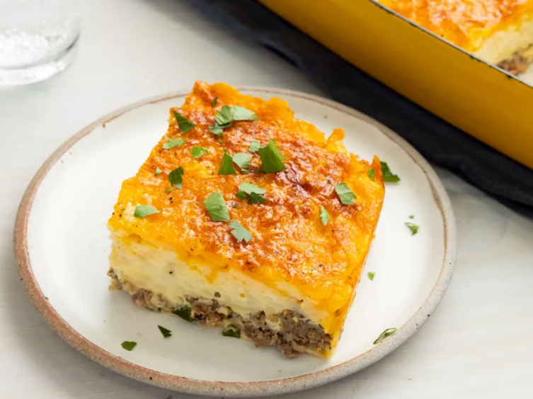

Sausage Breakfast Casserole

Description
This savory sausage breakfast casserole with hash brown potatoes, green onions, and cheese is easy to put together and
perfect for a hearty breakfast or weekend brunch. You can cook the sausage and green onions in a cast-iron skillet,
and use that to bake the casserole instead of a baking dish.
Ingredients:
- 1 (16 ounce) package bulk breakfast sausage
- 1 green onion, chopped
- 1 (16 ounce) package hash brown potatoes
- 2 cups shredded Cheddar cheese
- 6 large eggs, lightly beaten
- 1 cup milk
- 1 (2.64 ounce) package country gravy mix
- 1 pinch ground paprika, or to taste
Steps:
- Preheat the oven to 325 degrees F (165 degrees C). Grease an 8x11-inch baking dish.
- Cook and stir breakfast sausage in a skillet over medium heat until browned and crumbly, about 10 minutes; drain excess grease.
- Mix green onion into the sausage and spread into the bottom of the prepared baking dish.
- Spread hash brown potatoes in a layer over top; sprinkle with Cheddar cheese.
- Whisk eggs, milk, and gravy mix together in a bowl until smooth; pour over casserole. Season with paprika.
- Bake in the preheated oven until a knife inserted into the center of the casserole comes out clean, about 1 hour. Let stand 10 minutes to firm up before serving.
Return to Home Page